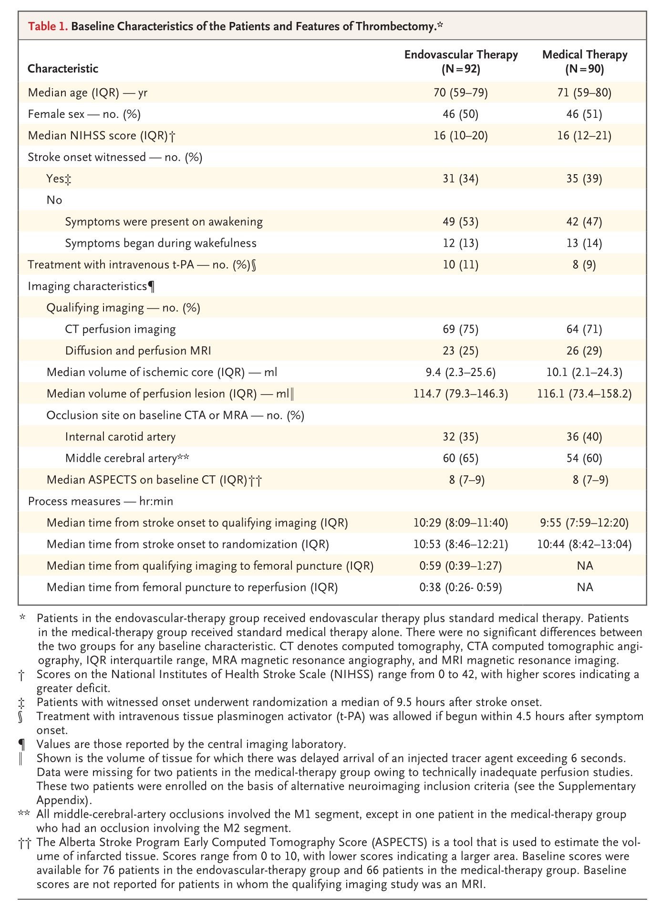
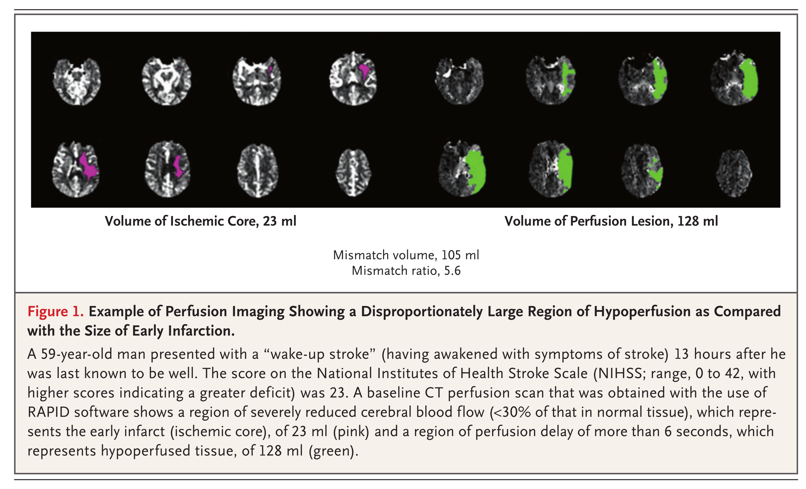
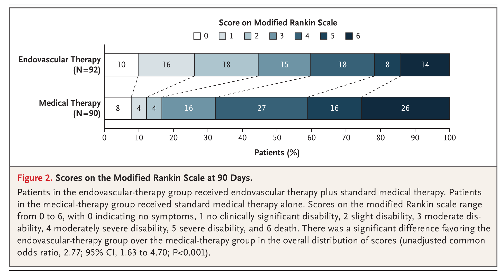
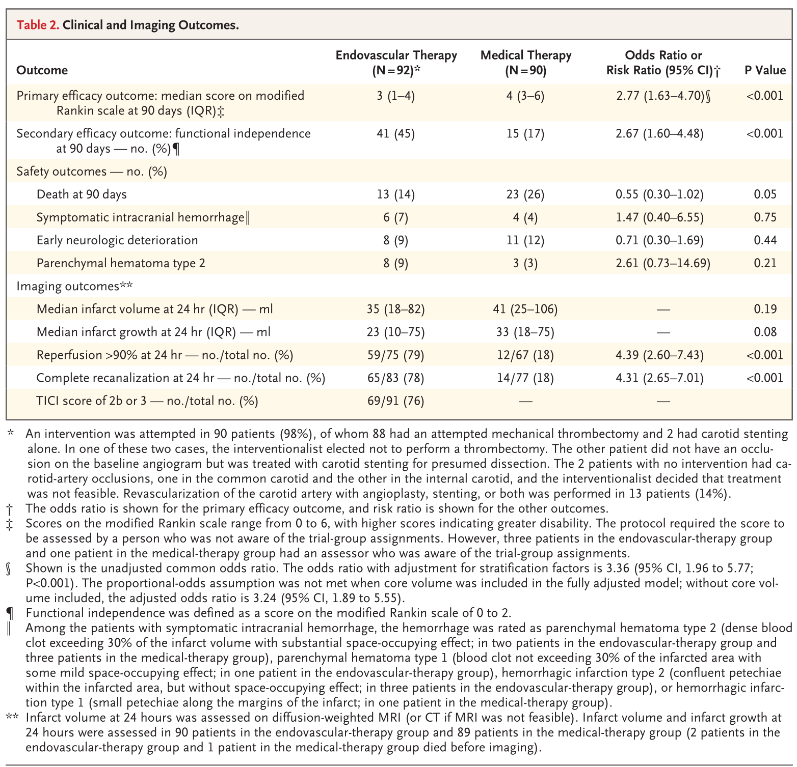
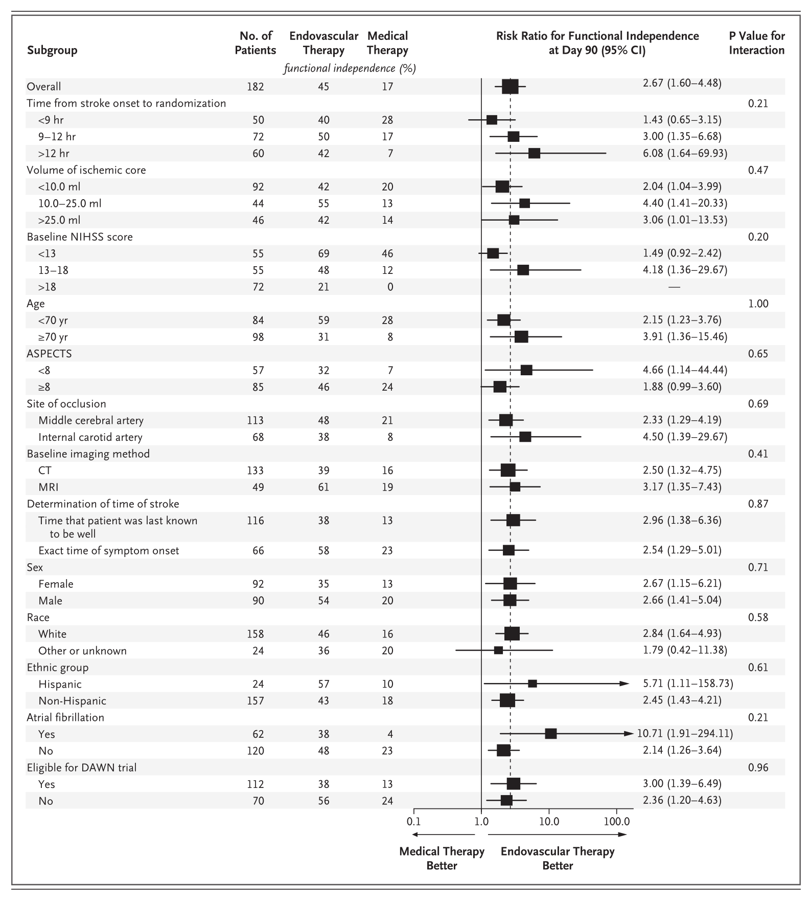
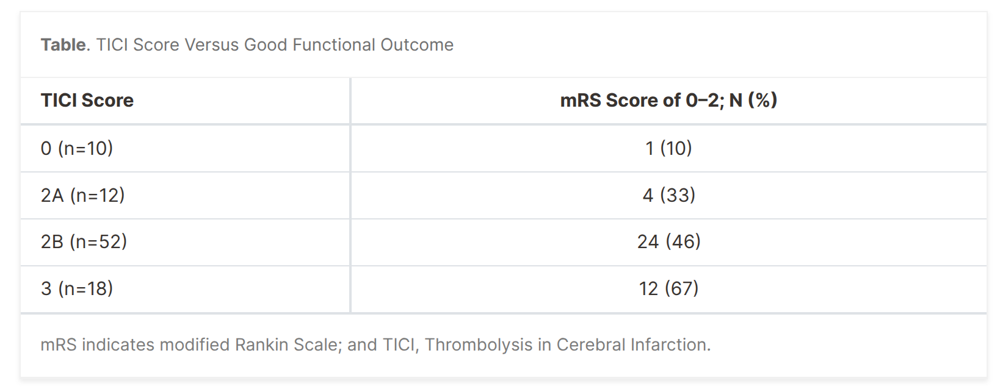
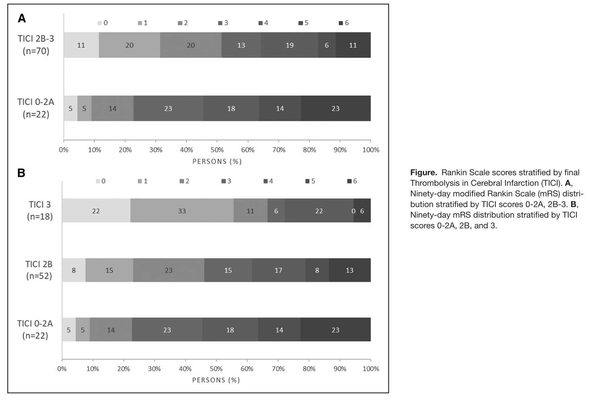
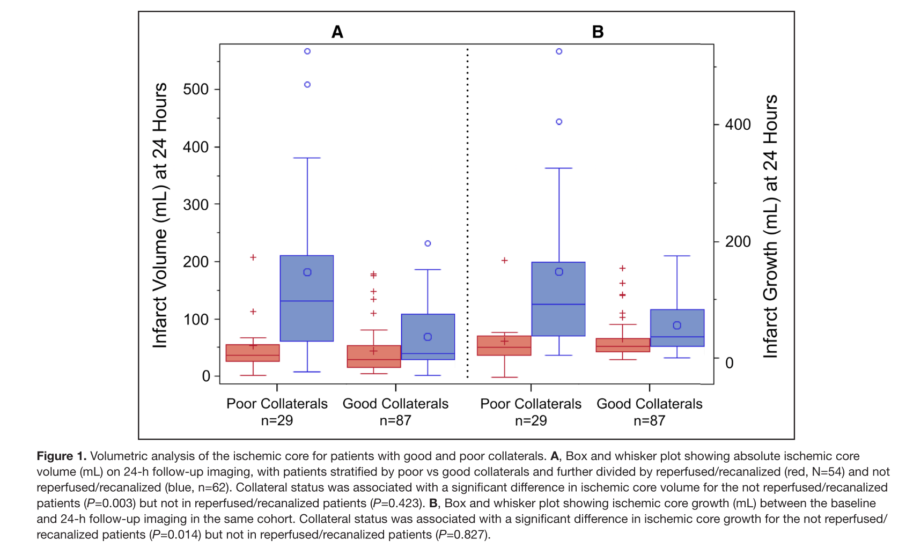
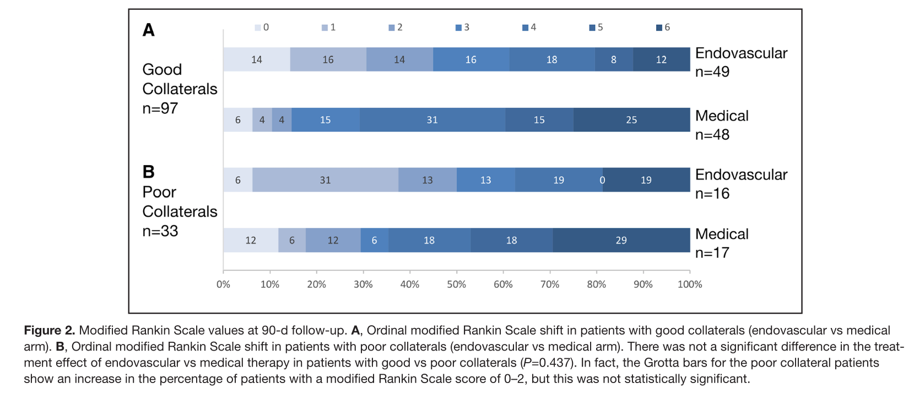

DEFUSE-3 trial#
Papers#
[1] Main results of treated population by reperfusion state
[2] Protocol
[3] Main results of control vs treated
[4] Substudy on collateral blood supply
[5] Subgroup analysis
Patient selection#
The trial focused on patients with acute a large vessel ischemic stroke caused by a blockage in the internal carotid artery (ICA) or middle cerebral artery (MCA).
NIHSS >= 6
Modified Rankin Scale less than or equal to 2 prior to qualifying stroke
Time window: Patients had to be treated within 6 to 16 hours of when they were last known to be well.
Perfusion imaging (CT Perfusion or MR Perfusion) assess blood flow in brain. Patients were selected based on having significant salvageable tissue, indicated the presence of an ischemic penumbra around a small core. The penumbra is tissue at risk of damage but still potentially salvageable.
Target Mismatch Profile on CT perfusion or MRI (ischemic core volume is <70 ml, mismatch ratio is at least 1.8 and mismatch volume is at least 15 ml)
Exclude treated with tPA >4.5 h after time last known well (or > 3hrs for age 80+)
Exclude ASPECTS < 6

An example of a selected patient is shown below:

Key results#
Main trial results#
Paper [3] describes key results.
Thrombectomy improved the proportion patients mRS 0-2 from 17% to 45% (odds ratio 4.0). There was a favourable shift (odds ratio 2.8) of improved mRS with thrombectomy. Mortality was reduced from 26% to 14%.


Subgroup analysis was limited by the trial being stopped early, but results for recruited patients showed no significant herterogeneity of effect (see also paper [5]).

Relationship of outcome with degree of reperfusion achieved#
Paper [1] describes results for treated patients according to level of reperfusion achieved.
Effectiveness analysed by level of reperfusion achieved, using the Thrombolysis in Cerebral Infarction (TICI) scale:
0: No Perfusion
1: Minimal Perfusion
2a: Partial Perfusion (<50% perfusion of the artery and its main branches)
2b: Partial Perfusion (>50% perfusion of the artery and its main branches)
Complete Perfusion
Improved modified rankin scale was associated with greater levels of reperfusion.


Effect of collateral blood supply#
Paper [4] describes relationship between collateral blood supply, core volume, and outcome.
75% of patients were considered to have good collateral blood supply, and 25% poor collateral blood supply.
Good collaterals were associated with significantly smaller ischemic core volume and less ischemic core growth. The difference in the treatment effect of endovascular thrombectomy was not significant (P=0.8).
In DEFUSE 3 patients, good leptomeningeal collaterals on single phase computed tomography angiography were not predictive of functional independence or death and did not impact the treatment effect of endovascular thrombectomy. These unexpected findings require further study to confirm their validity and to better understand the role of collaterals for stroke patients with anterior circulation large vessel occlusion in the late therapeutic window.


Citations#
[1] Marks et al. (2018) Endovascular Treatment in the DEFUSE 3 Study. Stroke 49:2000-2003
[2] Albers et al. (2017) A multicenter randomized controlled trial of endovascular therapy following imaging evaluation for ischemic stroke (DEFUSE 3). Int J Stroke 12:896-905
[3] Albers et al. (2018) Thrombectomy for Stroke at 6 to 16 Hours with Selection by Perfusion Imaging. New Eng J Med 378:708-18.
[4] de Havenon et al (2019) Results From DEFUSE 3: Good Collaterals Are Associated With Reduced Ischemic Core Growth but Not Neurologic Outcome. Stroke. 50:632-638
[5] Lansberg et al (2019) Association of Thrombectomy With Stroke Outcomes Among Patient Subgroups: Secondary Analyses of the DEFUSE 3 Randomized Clinical Trial. JAMA Neurol. 76(4):447-453.